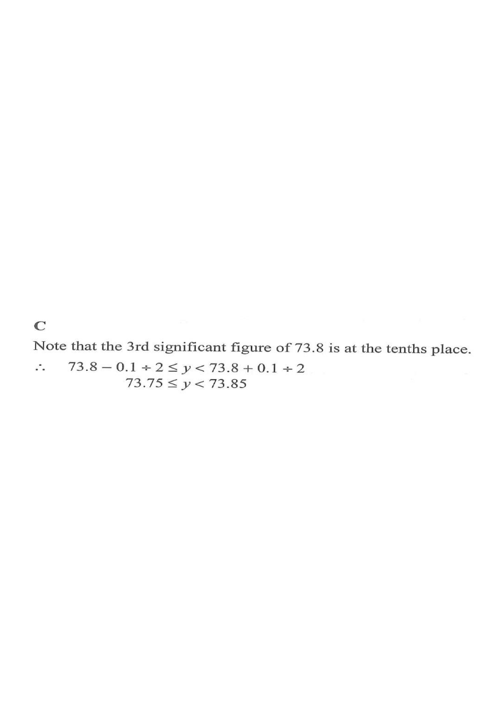

Estimation, Approximation & Error — Numbers Correct to Significant Figures
Scroll the solution steps → the diagram highlights each idea.
number linegiven value 73.8acceptable intervalexcluded endpoints
Question
If $y=73.8$ (correct to 3 significant figures), find the range of values of $y$.
A. $73.75 \le y < 73.8$
B. $73.75 < y \le 73.8$
C. $73.75 \le y < 73.85$
D. $73.8 \le y < 73.85$

Figure (original exam diagram)
1 Identify the place of the 3rd significant figure
$73.8$ has significant figures 7, 3, 8. The 3rd significant figure $8$ sits at the tenths place (i.e. worth $0.1$).
Hint: The rounding unit = the place value of the last significant figure. Here the unit is $0.1$.
2 Find the "half-unit" error bound
Maximum Absolute Error\(\text{max. absolute error}=\tfrac{1}{2}\times\text{rounding unit}\)The last significant figure of \(73.8\) is worth \(0.1\), so the error is at most \(0.05\).
Maximum error $= \dfrac{0.1}{2} = 0.05$.
A number rounds to $73.8$ if it lies within $0.05$ of $73.8$.
Hint: Correct to the nearest $0.1$ means an error strictly less than half of $0.1$.
3 Build the interval
Rounding Interval\(x-\tfrac{1}{2}u\le yEvery value from \(73.75\) up to (but not including) \(73.85\) rounds to \(73.8\).
$$73.8-0.05 \;\le\; y \;<\; 73.8+0.05$$
$$73.75 \;\le\; y \;<\; 73.85$$
Hint: The lower end is included (since $73.75$ rounds up to $73.8$); the upper end is excluded (since $73.85$ rounds up to $73.9$, not $73.8$).
4 Check the endpoints on the number line
$73.75 \to 73.8$ ✔ (included, solid dot)
$73.8499\ldots \to 73.8$ ✔ (inside)
$73.85 \to 73.9$ ✘ (excluded, open circle)
Hint: A solid dot means the value is included; a hollow circle means it is not.
5 Match the option
The range $73.75 \le y < 73.85$ matches option C.
Note that options A and B cut off at $73.8$, which wrongly excludes values such as $73.82$ that also round to $73.8$.
Hint: The interval must be symmetric about $73.8$ with width exactly $0.1$.
Answer: C — $73.75 \le y < 73.85$
PRACTICESimilar question — try it yourself
Question. A length \(y\) is \(46.2\ \text{cm}\) correct to the nearest \(0.1\ \text{cm}\). Find the range of possible values of \(y\).
Show the worked solution
Step 1. The rounding unit is \(0.1\ \text{cm}\), so the maximum absolute error is \(\tfrac{1}{2}(0.1)=0.05\ \text{cm}\).